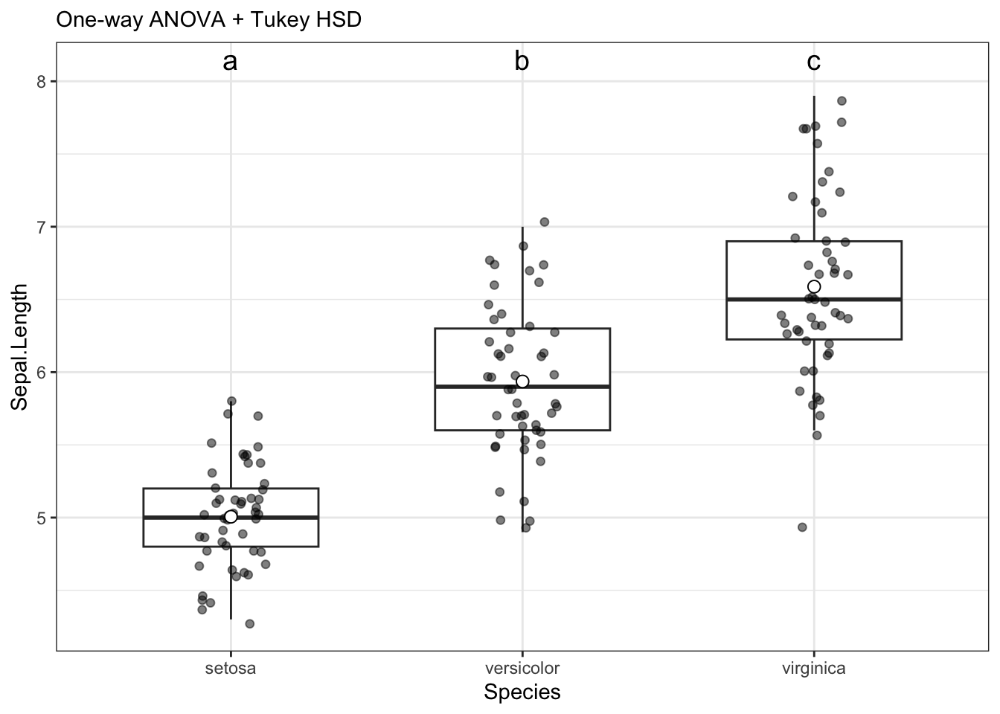
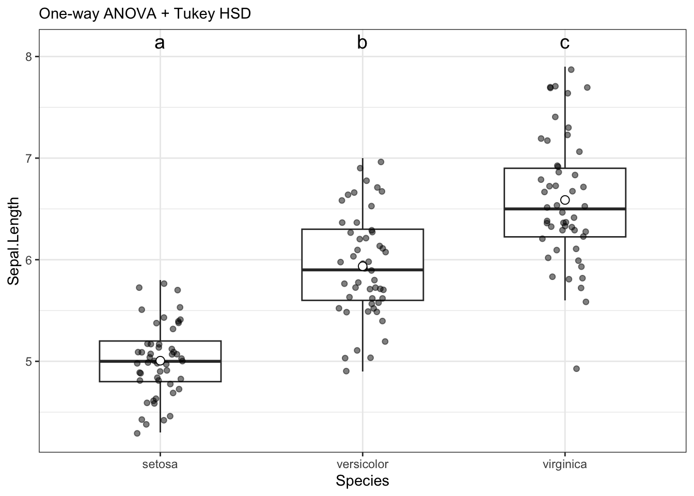

# plyr needed for examples on this page
library(plyr)
# load tidyverse
library(tidyverse)
# need for stats
# see glossary for install instructions
library(UNKstats)12 ANOVA: Part 1
12.1 Introduction
When we are comparing multiple (2+) populations, we perform what is called an analysis of variance - or an ANOVA. We opt for this different method because we are trying to minimize error. As you’ll recall, we use \(\alpha\) to minimize our chances of making an error and coming to an incorrect conclusion regarding our data. In our previous tests (\(t\)-tests) we are comparing the means between two different populations, such that \(H_0: \mu_1 = \mu_2\). When comparing multiple populations, comparing the means in this direct fashion can increase the probability of introducing error into a system. Consider the following:
# This creates a reproducible example
# rnorm creates random datasets
set.seed(8675309)
for(i in 1:100){
x <- rnorm(10)
if(i == 1){
data <- x |> as.data.frame()
colnames(data) <- "Response"
data$Explanatory <- paste0("x",i)
}else{
newdat <- x |> as.data.frame()
colnames(newdat) <- "Response"
newdat$Explanatory <- paste0("x",i)
data <- rbind(data,newdat)
}
}
# summarize by group
summary_data <- ddply(data, "Explanatory", summarise,
N = length(Response),
mean = mean(Response),
sd = sd(Response),
se = sd / sqrt(N))
ggplot(summary_data, aes(x = Explanatory, y = mean, group = Explanatory)) +
geom_point() +
geom_errorbar(data = summary_data, aes(ymin = mean - 2*se, ymax = mean+2*se,
color = Explanatory), width = 0.1) +
geom_hline(yintercept = 0, col = "black", linewidth = 0.5) +
ylim(c(-1.5,1.5)) +
theme_classic() +
theme(legend.position = "none",
axis.text.x = element_text(angle = 90, vjust = 0.5, size = 5))
As we can see above, with just ten random samples and 100 sampling events, we get some datasets that do not have the mean included within the interquartile range, and thus have means that would be statistically different than what we draw. As we increase the number of draws, we get closer to the mean:
set.seed(8675309)
for(i in 1:100){
x <- rnorm(100)
if(i == 1){
data <- x |> as.data.frame()
colnames(data) <- "Response"
data$Explanatory <- paste0("x",i)
}else{
newdat <- x |> as.data.frame()
colnames(newdat) <- "Response"
newdat$Explanatory <- paste0("x",i)
data <- rbind(data,newdat)
}
}
# summarize by group
summary_data <- ddply(data, "Explanatory", summarise,
N = length(Response),
mean = mean(Response),
sd = sd(Response),
se = sd / sqrt(N))
ggplot(summary_data, aes(x = Explanatory, y = mean, group = Explanatory)) +
geom_point() +
geom_errorbar(data = summary_data, aes(ymin = mean - 2*se, ymax = mean+2*se,
color = Explanatory), width = 0.1) +
geom_hline(yintercept = 0, col = "black", linewidth = 0.5) +
ylim(c(-1.5,1.5)) +
theme_classic() +
theme(legend.position = "none",
axis.text.x = element_text(angle = 90, vjust = 0.5, size = 5))
As we can see, even with 100 sample, we still have some chances of having groups that are different! When we do pairwise comparisons, we are compounding the error and the possibility of coming to an incorrect conclusion. Thus, when comparing multiple groups, we use the variances to see if groups come from the same distribution rather than the mean.
12.1.1 A faster way to check normality
Checking the normality can be a pain. Thankfully, there is an easier way we can check. Take, for example, the penguins dataset built into R.
head(penguins) species island bill_len bill_dep flipper_len body_mass sex year
1 Adelie Torgersen 39.1 18.7 181 3750 male 2007
2 Adelie Torgersen 39.5 17.4 186 3800 female 2007
3 Adelie Torgersen 40.3 18.0 195 3250 female 2007
4 Adelie Torgersen NA NA NA NA <NA> 2007
5 Adelie Torgersen 36.7 19.3 193 3450 female 2007
6 Adelie Torgersen 39.3 20.6 190 3650 male 2007Let’s say we want to check if the bill length is normally distributed between all species.
First, we have to remove NA values for this example only to make sure things work right.
# FOR THIS EXAMPLE ONLY
# remove NA values
penguins2 <- penguins |>
na.omit()Next, we can test for normality by species in bill length.
penguins2 |>
group_by(species) |>
dplyr::summarize(p.value = shapiro.test(bill_len)$p.value)# A tibble: 3 × 2
species p.value
<fct> <dbl>
1 Adelie 0.685
2 Chinstrap 0.194
3 Gentoo 0.0199As we can see above, two species are normally distributed, but Gentoo Penguin is not.
NOTE that I ran dplyr::summarize and not summarize - there is an error in the libraries used in this class where summarize is sometimes overwritten, so specifying the dplyr library (part of tidyverse) ensures that we always get the right function.
We can test a transformation like so:
penguins2 |>
group_by(species) |>
dplyr::summarize(p.value = shapiro.test(log1p(bill_len))$p.value)# A tibble: 3 × 2
species p.value
<fct> <dbl>
1 Adelie 0.863
2 Chinstrap 0.121
3 Gentoo 0.202As we can see, a log1p transformation is sufficient.
12.2 ANOVA: By hand
We are predominately going to be using the default function aov to perform ANOVAs in this course. However, you can expand the following workthrough if you would like to see step-by-step instructions on calculating a one-way ANOVA by hand.
Click here to see the manual method.
For this workthrough, we will use the following portion of the iris dataset built in the base R.
iris_subset <- iris |>
select(Sepal.Length, Species)
summary(iris_subset) Sepal.Length Species
Min. :4.300 setosa :50
1st Qu.:5.100 versicolor:50
Median :5.800 virginica :50
Mean :5.843
3rd Qu.:6.400
Max. :7.900 NOTE throughout this process that I am trying to name variables in a straightforward fashion so as not to lose my way.
12.2.1 Calculate group means and Grand Mean
First, we can calculate the group means across the dataset. We can use the function aggregate to do this across all of our data.
group_means <- iris_subset |>
aggregate(Sepal.Length ~ Species, FUN = mean)
group_means Species Sepal.Length
1 setosa 5.006
2 versicolor 5.936
3 virginica 6.588Secondly, we can calculate the grand mean for the entire dataset. We can do this by summing the entire variable column in which we are interested.
# calculate the grand mean
grand_mean <- mean(iris_subset$Sepal.Length)12.2.2 N
Next, we can get the total number of individuals in the study. This is done by getting the number of rows in the dataset.
N <- nrow(iris_subset)12.2.3 Total sum of squares
To calculate the total sum of squares (TSS), we need to take the deviations (differences) of each point from the grand mean \(\bar{x}_n\), square them, and them take the sum of them.
# calculate deviates
# can calculate across all table at once
grand_deviates_squared <- (iris_subset$Sepal.Length - grand_mean)^2
# round output for here
# head to just view the first few
grand_deviates_squared |> round(2) |> head()[1] 0.55 0.89 1.31 1.55 0.71 0.20# calculate the sum of all the deviates
ss_total <- grand_deviates_squared |>
sum()
ss_total |> round(2)[1] 102.1712.2.4 Within-group sum of squares
For each data point, we need to calculate its deviation from its own group mean, squaring these deviations and then summing them together. We can’t calculate this quite as elegantly as the aforementioned data, and specific aspects - like the number of times each value is repeated - will need to change based on the data that you are using.
group_means_expanded <- c(rep(group_means$Sepal.Length[1],
nrow(iris_subset)/3),
rep(group_means$Sepal.Length[2],
nrow(iris_subset)/3),
rep(group_means$Sepal.Length[3],
nrow(iris_subset)/3))
group_deviates <- iris_subset$Sepal.Length - group_means_expanded
ss_within <- sum(group_deviates^2)12.2.5 Among-group sum of squares
The total sum of squares is equal to the among groups sum of squares and the within groups sum of squares added together; thus, we can solve this part with some easy arithmetic.
ss_among <- ss_total - ss_within
ss_among |> round(2)[1] 63.2112.2.6 Calculate degrees of freedom
Our degrees of freedom for the “between” group is the number of categories minus one (\(K-1\)).
ss_among_df <- length(unique(iris_subset$Species)) - 1
ss_among_df[1] 2Our degrees of freedom for the within group are the number of total samples minus the number of categories (\(N - K\)).
ss_within_df <- N - ncol(iris_subset)
ss_within_df[1] 148Our degrees of freedom for the total sum of squares is the number of samples minus one (\(N-1\)).
ss_total_df <- N - 1
ss_total_df[1] 14912.2.7 Calculate mean squares
For each category (among and within), the mean square is equal to the sum of squares divided by the degrees of freedom.
ms_among <- ss_among/ss_among_df
ms_among |> round(2)[1] 31.61ms_within <- ss_within/ss_within_df
ms_within |> round(2)[1] 0.2612.2.8 Get \(F\) statistic
We divide the sum of squares among data point by the sum of squares within data points to obtain our \(F\) statistic.
f_stat <- ms_among/ms_within
f_stat |> round(2)[1] 120.0812.2.9 Get \(p\) value
We can use the function pf to calculate the \(p\) value for any given \(F\). Note that this function requires two different degrees of freedom to work correctly, and we are always looking right since this is a unidirectional distribution.
pf(f_stat,
df1 = ss_among_df,
df2 = ss_within_df,
lower.tail = F)[1] 1.031005e-31Given how small our \(p\) value is, we want to round this to \(p<0.0001\). As we can see, it is very unlikely that these are the same population.
12.3 ANOVA: By R
For this, we need to use the dataframe where we have all data in a single column and all ID’s in the other columns. This can be done easily with tibble, as shown below.
head(iris_subset) Sepal.Length Species
1 5.1 setosa
2 4.9 setosa
3 4.7 setosa
4 4.6 setosa
5 5.0 setosa
6 5.4 setosaOnce the data is in this format, it can be ran through the run_oneway function from the UNKstats package. This function needs: data = (the data frame you are trying analyse)
dv = (dependent variable, it will be the column with the numbers)
group = (the grouping factor)
If the test needs to be parametric, you must specify that as it defaults to a non-parametric test.
data_aov <- run_oneway(data = iris_subset,
dv = "Sepal.Length",
group = "Species",
parametric = TRUE)
data_aov$test_info
$test_info$test
[1] "oneway_anova_tukey"
$test_info$parametric
[1] TRUE
$model
Call:
stats::aov(formula = fml, data = df)
Terms:
Species Residuals
Sum of Squares 63.21213 38.95620
Deg. of Freedom 2 147
Residual standard error: 0.5147894
Estimated effects may be unbalanced
$anova_table
# A tibble: 2 × 6
term df sumsq meansq statistic p.value
<chr> <int> <dbl> <dbl> <dbl> <dbl>
1 Species 2 63.2 31.6 119. 1.67e-31
2 Residuals 147 39.0 0.265 NA NA
$posthoc
# A tibble: 3 × 7
contrast diff lwr upr p.adj group2 group1
<chr> <dbl> <dbl> <dbl> <dbl> <chr> <chr>
1 versicolor-setosa 0.930 0.686 1.17 3.31e-14 versicolor setosa
2 virginica-setosa 1.58 1.34 1.83 2.22e-15 virginica setosa
3 virginica-versicolor 0.652 0.408 0.896 8.29e- 9 virginica versicolor
$letters
# A tibble: 3 × 2
Species .group
<chr> <chr>
1 setosa a
2 versicolor b
3 virginica c
$plot
attr(,"class")
[1] "teach_anova_result" "list"
attr(,"meta")
attr(,"meta")$design
[1] "oneway_between"
attr(,"meta")$dv
[1] "Sepal.Length"
attr(,"meta")$factors
attr(,"meta")$factors$between
[1] "Species"
attr(,"meta")$adjust
[1] "tukey"
attr(,"meta")$parametric
[1] TRUEThese numbers match the by hand methodology from the previous section, showing that the math is the same.
*NOTE these numbers are close, but not quite. I need to troubleshoot this a little more.
12.4 Post-hoc Tukey test
ANOVA tells us if a test is different, but it doesn’t tell us which test is different. To do this, we have to perform a Tukey test.
12.4.1 Tukey test by hand
To do this by hand, we will need a lot of data from our aforementioned ANOVA test.
Click here to see the by-hand method.
Under construction…
We need to calculate pairwise differences between each set of means.
x1_mean <- mean(data$Response[data$Explanatory == "x1"])
x2_mean <- mean(data$Response[data$Explanatory == "x2"])
x3_mean <- mean(data$Response[data$Explanatory == "x3"])
x4_mean <- mean(data$Response[data$Explanatory == "x4"])
group_means <- c(x1_mean, x2_mean, x3_mean, x4_mean)
# calculate all pairwise differences
pairwise_mean_diffs <- dist(group_means)
pairwise_mean_diffs |> round(2)Next, we need a critical \(Q\) value against which we can compare. For Tukey, our degrees of freedom are the same as the degrees of freedom for \(SS_{within}\): \(N - K\).
# set p value
tukey_q <- qtukey(p = 0.95,
# get length of categories / columns
nmeans = ncol(iris_subset),
df = ss_within_df)
tukey_q |> round(2)We need to multiply \(Q\) by the pooled variance.This is the same as the average of the variances for each group.
var_data <- 0
# calculate pooled variance
for(i in 1:ncol(expanded_data)){
var_data <- var_data + var(expanded_data[,i])
}
pooled_var_dat <- sqrt(var_data/n)
pooled_var_dat |> round(2)We can calculate the Tukey critical value by multiplying the pooled variance by \(Q\).
tukey_critical <- tukey_q*pooled_var_dat
tukey_critical |> round(2)Remember, we are comparing to the actual value, not the rounded value.
Which mean differences are difference compared to our critical value?
pairwise_mean_diffs[pairwise_mean_diffs < tukey_critical] <- 0
pairwise_mean_diffsAs we can see above, three differences cross our threshold - all associated with x1.
When we graph things, we want to label this group as different. We will cover this a little later in the tutorial.
12.4.2 Tukey test in R
Tukey is included in the run_oneway function; if you want to show it separately, you can do the following.
data_aov$posthoc# A tibble: 3 × 7
contrast diff lwr upr p.adj group2 group1
<chr> <dbl> <dbl> <dbl> <dbl> <chr> <chr>
1 versicolor-setosa 0.930 0.686 1.17 3.31e-14 versicolor setosa
2 virginica-setosa 1.58 1.34 1.83 2.22e-15 virginica setosa
3 virginica-versicolor 0.652 0.408 0.896 8.29e- 9 virginica versicolor12.5 Plotting
Plotting is automatically done by the run_oneway function. It can be found by saving the output of the function as a variable, then calling upon it like so:
data_aov$plot
12.6 Kruskal-Wallis tests
The Kruskal-Wallis test is the non-parametric version of an ANOVA. To demonstrate this, we will be creating a non-normal distribution by pulling random values from a uniform distribution, using the random uniform function runif. Note we are rounding the data here to make it more similar to non-normal datasets you may encounter, and to increase the probability of ties.
12.6.1 Confirming normality
We can confirm these data are non-normal with Shapiro-Wilk tests and histograms.
iris_subset |>
group_by(Species) |>
dplyr::summarise(p.value = shapiro.test(Sepal.Length)$p.value)# A tibble: 3 × 2
Species p.value
<fct> <dbl>
1 setosa 0.460
2 versicolor 0.465
3 virginica 0.258While these data came out normal, for the purposes of this example, we will proceed with a non-normal test.
12.6.2 Performing the test
kruskal_oneway <- run_oneway(iris_subset,
dv = "Sepal.Length",
group = "Species",
parametric = F) #This is what makes it run the non-parametric test!
kruskal_oneway$test_info
$test_info$test
[1] "kruskal_dunn"
$test_info$parametric
[1] FALSE
$model
NULL
$anova_table
# A tibble: 1 × 5
term statistic df p.value method
<chr> <dbl> <int> <dbl> <chr>
1 Species 96.9 2 8.92e-22 Kruskal–Wallis
$posthoc
# A tibble: 3 × 3
group1 group2 p.adj
<chr> <chr> <dbl>
1 setosa versicolor 1.53e- 9
2 setosa virginica 6.00e-22
3 versicolor virginica 2.77e- 4
$letters
# A tibble: 3 × 2
Species .group
<chr> <chr>
1 setosa a
2 versicolor b
3 virginica c
$plot
attr(,"class")
[1] "teach_anova_result" "list"
attr(,"meta")
attr(,"meta")$design
[1] "oneway_between"
attr(,"meta")$dv
[1] "Sepal.Length"
attr(,"meta")$factors
attr(,"meta")$factors$between
[1] "Species"
attr(,"meta")$adjust
[1] "BH"
attr(,"meta")$parametric
[1] FALSE12.6.3 By hand
Click here to see the Kruskal-Wallis by hand.
First, we need to order all the data in the entire dataset. This is easiest to do if we use the dataset with all data in a single column.
iris_subset$ranks <- rank(iris_subset$Sepal.Length, ties.method = "average")
# view first couple of rows
head(iris_subset) Sepal.Length Species ranks
1 5.1 setosa 37.0
2 4.9 setosa 19.5
3 4.7 setosa 10.5
4 4.6 setosa 7.5
5 5.0 setosa 27.5
6 5.4 setosa 49.5Now, we need to calculate the sum of the ranks for each category.
rank_sums <- aggregate(iris_subset, Sepal.Length ~ Species, FUN = sum)
rank_sums Species Sepal.Length
1 setosa 250.3
2 versicolor 296.8
3 virginica 329.4Now, we need to calculate our test statistic. The test statistic is \(H\), with: \[H = \frac{12}{N(N+1)} \cdot \Sigma \frac{R_j^2}{n_j}-3(N+1)\]In this equation, \(R\) is the sum of the ranks for a given category. This follows a \(\chi^2\) distribution with \(k-1\) degrees of freedom, with \(k\) referring to categories.
For these, we need to know what \(n\) is for each category. This is the same N as calculated above divided by the number of categories (3).
n <- N/3Next, we can calculate the sums of the \(\frac{R^2}{n}\) term.
r2_sum <- (rank_sums$Sepal.Length/n) |> sum()Now, we can calculate \(H\).
H <- ((12/(N*(N+1)))*r2_sum)-(3*(N+1))
H |> round(2)[1] -452.99Now, we can evaluate this with a \(\chi^2\) \(p\) value.
pchisq(q = H,
df = ncol(data)-1,
# remember, looking right!
lower.tail = FALSE)[1] 1As we can see, the probability is extremely low with \(p < 0.0001\). One distribution is different, and we can proceed with Tukey tests.
12.7 Homework: One-way ANOVA
Complete the following problems. You must complete one problem by hand in addition to using the R method.
12.7.1 Question 1: Drug dosage effectiveness
Researchers want to test a new drug when given at different dosages. They are also including a placebo. They are measuring the score on a psychological examination, where a lower score indicates better mental condition, and are hoping to find the most effective dose to reduce score. Run the proper tests to determine if each group is unique and what effects they have.
drug <- tibble(
Dose = rep(c("Placebo","Low","Med","High"), each = 12),
Score = c(
# Placebo
0.90,0.82,1.00,1.12,0.74,0.93,1.02,1.21,0.84,0.91,1.08,0.86,
# Low
0.10,0.00,-0.10,0.20,0.05,-0.05,0.15,0.00,-0.10,0.12,0.06,0.01,
# Med
-0.30,-0.42,-0.22,-0.50,-0.35,-0.27,-0.31,-0.46,-0.38,-0.20,-0.36,-0.29,
# High
0.40,0.32,0.50,0.36,0.25,0.46,0.41,0.52,0.35,0.30,0.44,0.39
)
)- State the null and alternative hypotheses.
- Are these data normal? How can you tell?
- Which dosage/dosages are most effective at reducing the score?
- What might the biological implications of this test be?
12.7.2 Question 2: 105 Labs
Professors at UNK are debating if labs should be kept in Biology 105. They want to see if exam scores are higher in classes taught with only lecture, only lab, or both. Run the proper tests to determine if each group is unique and what effects they have.
teach <- tibble(
Method = rep(c("Lab","Both","Lecture"), each = 15),
Exam = c(
# Lab
76,79,82,77,75,80,81,78,76,79,77,83,74,80,78,
# Both
84,85,82,88,83,86,84,87,81,86,85,83,84,89,82,
# Lecture
80,82,79,83,81,80,82,81,84,78,83,80,81,79,82
)
)- State the null and alternative hypotheses.
- Are these data normal?
- Which teaching method is most effective? How do you know this?
- What might the teaching implications of this test be?
12.7.3 Question 3: Weight gain drugs
Researchers are testing weight gain drugs in comparison to each other. They are also comparing the effects of these drugs to a placebo. Run the proper tests to determine if each group is unique and what effects they have.
diet <- tibble(
Diet = rep(c("A","B","C", "Placebo"), each = 14),
WeightGain = c(
# A
1.1,0.9,1.5,1.2,0.8,1.0,1.4,0.9,1.0,1.2,1.5,0.9,1.3,1.4,
# B
1.3,1.5,1.2,0.8,1.6,1.5,1.0,2.0,1.5,1.4,1.6,1.2,1.5,1.4,
# C
2.1,2.0,1.6,2.3,2.1,2.0,1.6,2.1,2.5,1.7,2.2,2.1,2.3,2.7,
# Placebo
0.2,0.2,-0.2,0.0,-0.8,-.4,0.4,0.2,1.0,0.0,-0.1,-0.2,-0.7,0.6
)
)- State the null and alternative hypotheses.
- Are these data normal?
- Interpret the meaning of the assigned letters. How were they found, and what do they mean?
- Which diet plan was most effective for gaining weight?
12.7.4 Question 4: Bird foraging times
A field study is measuring time-to-first-foraging (minutes) for four bird colonies. Run the proper tests to determine if each group is unique.
set.seed(4517)
n_per <- 18
Colonies_data <- data.frame(
Colony = rep(c("North","East","South","West"), each = n_per),
Minutes = c(
round(rexp(n_per, rate = 1.0), 1),
round(rexp(n_per, rate = 1.3), 1),
round(rexp(n_per, rate = 0.7), 1),
round(rexp(n_per, rate = 1.0), 1)
)
)- State the null and alternative hypotheses.
- Are these data normal?
- Interpret the meaning of the assigned letters. How were they found, and what do they mean?
- Which colony/colonies were the fastest foragers?
12.7.5 Question 5: Prairie vole ecology
A team of behavioral ecologists recorded the number of aggressive interactions among four populations of prairie voles raised in different social environments. They want to know if social upbringing influences aggression levels in male voles.
set.seed(9913)
n_per <- 16
vole <- tibble(
Environment = rep(c("Isolated","Paired","Group","Crowded"), each = n_per),
Aggression = c(
round(rnorm(n_per, mean = 8, sd = 3)),
round(rnorm(n_per, mean = 6, sd = 1.5)),
round(rnorm(n_per, mean = 4, sd = 2)),
round(rnorm(n_per, mean = 7, sd = 4))
)
)- State the null and alternative hypotheses.
- Are these data normal?
- Interpret the meaning of the assigned letters. How were they found, and what do they mean?